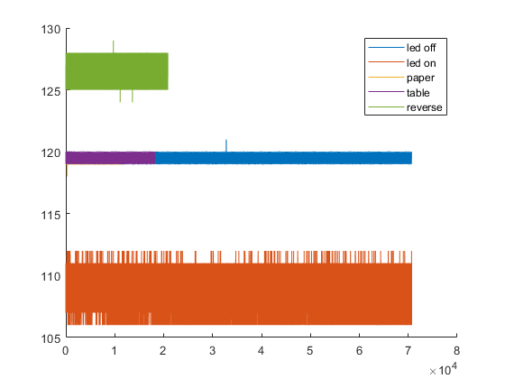
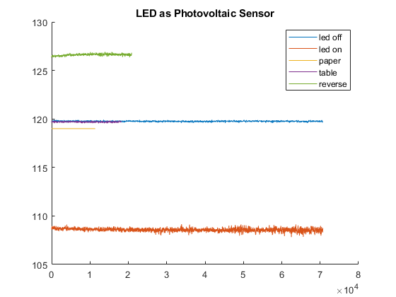

Contents
clear all
clc; clear; close all;
LED data
ledOff = csvread("led-off.csv");
ledOn = csvread("high-powered-led.csv");
paper = csvread("led-white-paper.csv");
table = csvread("led-black-table.csv");
reverse = csvread("led-reverse-bright.csv");
figure;
hold on;
plot(ledOff)
plot(ledOn)
plot(paper)
plot(table)
plot(reverse)
legend("led off","led on","paper","table","reverse")
figure
hold on
n = 64;
title("LED as Photovoltaic Sensor")
plot(movmean(ledOff,n))
plot(movmean(ledOn,n))
plot(movmean(paper,n))
plot(movmean(table,n))
plot(movmean(reverse,n))
legend("led off","led on","paper","table","reverse")
disp("moving average should work just fine here.")
moving average should work just fine here.
 